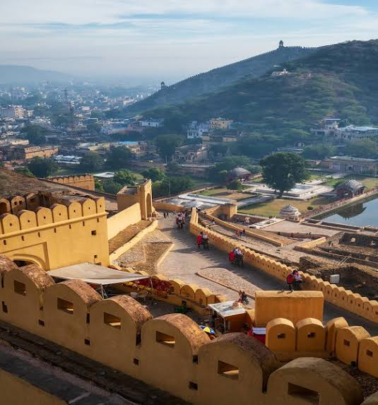
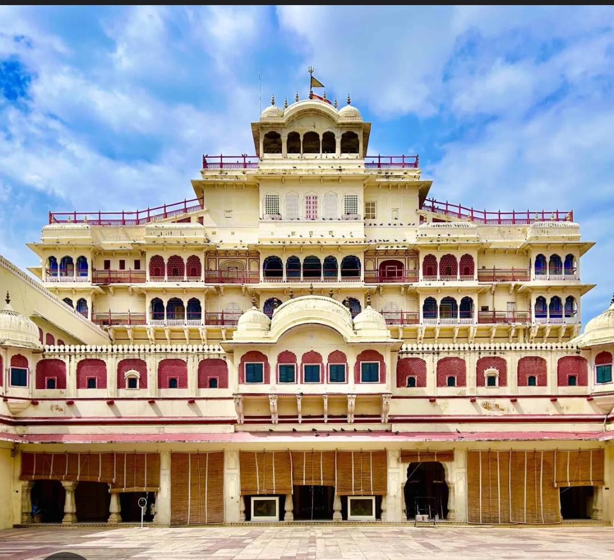
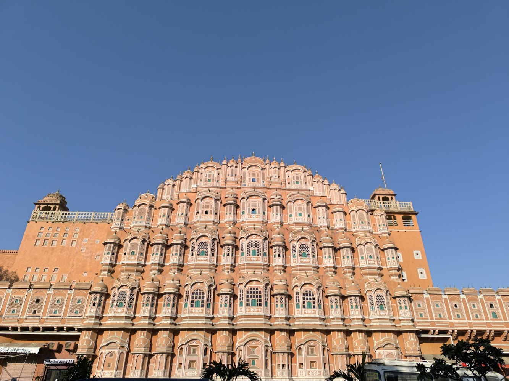
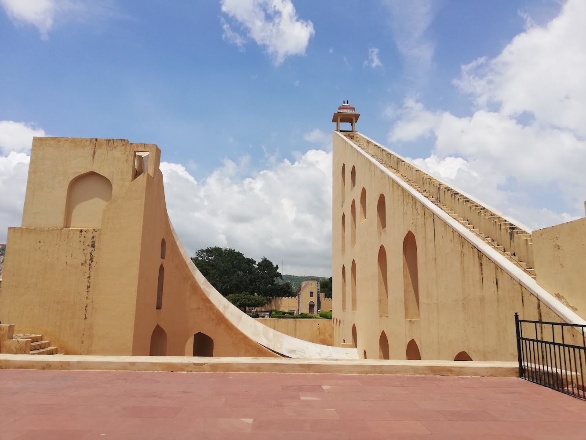

Travel Guide - Your Ultimate Travel Companion
Jaipur - The Pink City
Top Attractions
Here are some of the most popular attractions you shouldn't miss!
- Amber Fort

Amber Fort (also known as Amer Fort)is a historic hill fort located in Amer town, about 11 km from Jaipur, Rajasthan. Built primarily from red sandstone
and marble, it sits overlooking Maota Lake and stands as a major UNESCO World Heritage Site under the Hill Forts of Rajasthan listing.
Constructed in 1592 by Raja Man Singh I and later expanded by Mirza Raja Jai Singh I, the fort stands as a prime example of Indo-Islamic
architecture, seamlessly blending Rajput artistic traditions with Mughal design elements. Overlooking the scenic Maota Lake, the structure
is built entirely from red sandstone and white marble across four distinct courtyards. Among its most celebrated features is the Sheesh Mahal
(Mirror Palace), famous for its intricate glass mosaic walls that illuminate under a single source of light, as well as the grand Ganesh Pol
entrance and the naturally cooled Sukh Niwas. Connected to the nearby Jaigarh Fort via an underground escape tunnel, this UNESCO World Heritage
Site offers a profound glimpse into royal Rajasthani culture, history, and engineering.
- City Palace

The City Palace is a striking royal complex located at the center of the
Walled City of Jaipur, established in 1727 by Maharaja Sawai Jai Singh II when he shifted his capital from Amer.
Designed by chief architect Vidyadhar Bhattacharya according to Vaastu Shastra principles, the complex features a
grandeur blending Rajput, Mughal, and European architectural elements across expansive courtyards, gardens, and structures built from pink and red sandstone.
Highlights inside include the welcome pavilion Mubarak Mahal (now housing the Maharaja Sawai Man Singh II Museum), the grand seven-story Chandra Mahal which serves as the
ongoing residence for Jaipur's royal family, the Diwan-i-Khas featuring massive sterling silver vessels, and the famous Pritam Niwas Chowk with its intricate four gates representing the seasonal cycles.
- Hawa Mahal

Hawa Mahal, known as the "Palace of
Winds," is an extraordinary five-story monument
built in 1799 by Maharaja Sawai Pratap Singh along the edge of the City Palace in
Jaipur. Designed by architect Lal Chand Ustad in the form of Lord Krishna's crown,
the structure is constructed from signature pink and red sandstone to harmonize with the city's signature palette.
Its defining feature is a unique honeycomb facade adorned with 953 small latticed windows called
jharokhas, intricately crafted with fine stone screen work to allow royal ladies of the court to observe everyday
street life and festive processions below without being seen. Beyond its visual charm, this lattice design creates a Venturi effect,
channeling cool air throughout the interior chambers to keep the palace pleasantly ventilated during the hot summer months.
- Jantar Mantar

Jantar Mantar in Jaipur is an extraordinary 18th-century astronomical observatory
located adjacent to the City Palace, built by the astronomer king
Maharaja Sawai Jai Singh II between 1728 and 1734.
Designated as a UNESCO World Heritage Site, this open-air collection contains
19 large stone and brass architectural instruments designed to measure time,
track celestial bodies, predict eclipses, and determine the orbits of planets using
ancient Vedic astronomical principles. Constructed from locally sourced stone and marble,
the monument seamlessly combines geometry, science, and architectural beauty.
Among its most iconic structures is the Vrihat Samrat Yantra, which stands at
27 meters tall and is recognized as the world's largest stone sundial,
capable of measuring local time with an accuracy of two seconds.
Historical/Cultural Experience
Immerse yourself in the rich history and culture of Jaipur by exploring its
magnificent forts, palaces, museums, and traditional landmarks. Jaipur is
famous for its royal heritage, beautiful architecture, traditional art,
handicrafts, music, and vibrant cultural traditions. Visiting these
historical places gives you a better understanding of the city's royal past
and cultural identity.
- Nahargarh Fort
Nahargarh Fort is one of the most famous historical attractions in Jaipur.
Built in 1734 by Maharaja Sawai Jai Singh II, the fort stands on the
Aravalli Hills and offers a beautiful panoramic view of Jaipur city.
The fort was originally built as a defensive structure and later became
a popular royal retreat. Its magnificent architecture, peaceful
surroundings, and scenic views make it an excellent place to experience
the royal history of Jaipur.
- Albert Hall Museum
Albert Hall Museum is one of the oldest museums in Rajasthan and is
located in the Ram Niwas Garden of Jaipur. The museum is known for its
impressive Indo-Saracenic architecture and houses a large collection
of paintings, sculptures, carpets, coins, weapons, and traditional
Rajasthani art. The museum provides visitors with an opportunity to
learn about the history, culture, and artistic traditions of Rajasthan.
Its beautifully illuminated exterior also makes it a popular attraction
in the evening.
Together, these historical and cultural attractions offer visitors a
memorable experience of Jaipur's royal heritage and help them understand
the traditions, architecture, and lifestyle that have shaped the city over
centuries.
Food Experience
Food Experience
Jaipur is a paradise for food lovers and is famous for its
rich Rajasthani cuisine, traditional flavors, and colorful food culture.
From delicious street food to royal traditional meals, Jaipur offers a
memorable culinary experience for every visitor.
The food of Jaipur is known for its spicy flavors, aromatic spices,
and traditional cooking methods. Visitors can enjoy everything from
local snacks to authentic Rajasthani dishes.
Popular Foods of Jaipur
-
Dal Baati Churma
Dal Baati Churma is one of the most famous traditional dishes
of Rajasthan. It consists of baked wheat balls called baati,
served with spicy dal and sweet churma. This dish represents the
traditional taste and culture of Rajasthan.

-
Pyaaz Kachori
Pyaaz Kachori is a popular Jaipur street food made with a
crispy outer layer filled with spicy onion stuffing. It is usually
served with chutney and is a perfect breakfast or evening snack.

-
Ghewar
Ghewar is a traditional Rajasthani sweet with a unique
honeycomb-like texture. It is often served with rabri, sugar
syrup, and dry fruits. It is especially popular during
festivals and celebrations.

-
Laal Maas
Laal Maas is a famous Rajasthani mutton dish known for its
rich, spicy flavor and deep red color. It is prepared
using aromatic spices and is associated with the royal food
traditions of Rajasthan.

Jaipur Street Food Experience
Exploring Jaipur's street food is an exciting way to experience the
local lifestyle and culture. Visitors can explore local
markets and food streets to taste snacks such as kachori, samosa,
mirchi vada, lassi, and kulfi.
Food is an important part of Jaipur's culture. From traditional
Rajasthani thalis to delicious street food, every dish tells a story about
the history and traditions of the Pink City.
Must Try:
Dal Baati Churma, Pyaaz Kachori, Ghewar, Laal Maas, Lassi and Mirchi Vada.
Best Time To Visit Jaipur
Jaipur can be visited throughout the year, but the
best time to visit Jaipur is from October to March.
During these months, the weather is generally
pleasant, cool, and comfortable, making it ideal for exploring
forts, palaces, museums, markets, and other outdoor attractions.
The summer months can be extremely hot, while the monsoon season brings
occasional rainfall. Therefore, choosing the right season can make your
trip more enjoyable and comfortable.

October to March – Best Season
October to March is considered the most suitable period
for visiting Jaipur. The temperature remains comparatively pleasant during
the day and cooler in the evening. This is the perfect time to explore
popular attractions such as Amber Fort, City Palace, Hawa Mahal,
Nahargarh Fort, and Jantar Mantar.
Tourists can also enjoy local markets, traditional food, cultural
performances, and outdoor activities without the discomfort of
extreme heat.
April to June – Summer Season
The months from April to June are usually very hot in
Jaipur. Temperatures can become quite high, especially during the
afternoon. However, tourists can still visit the city by planning
sightseeing during the early morning or evening.
Tip: Carry a water bottle, sunglasses, sunscreen, and
light cotton clothes if you visit Jaipur during summer.
July to September – Monsoon Season
Jaipur receives some rainfall between July and September.
The weather becomes comparatively cooler, and the city looks fresh and
beautiful after rainfall. This period can be a good option for travelers
who want to avoid the peak tourist season.
Festivals and Cultural Events
Jaipur becomes even more colorful during its traditional festivals and
cultural events. Visitors can experience
Rajasthani music, folk dances, traditional clothes, handicrafts,
and local celebrations.
- Jaipur Literature Festival – A famous literary event.
- Teej Festival – A colorful traditional festival.
- Makar Sankranti – Famous for kite flying in Jaipur.
- Gangaur Festival – An important Rajasthani cultural celebration.
Quick Travel Guide
| Season |
Months |
Experience |
| Winter |
October - March |
Best Time |
| Summer |
April - June |
Very Hot |
| Monsoon |
July - September |
Moderate Rainfall |
My Recommendation:
Plan your Jaipur trip between October and March for the most
comfortable experience. This season allows you to explore the
Pink City's historical monuments, delicious food, colorful markets,
and rich cultural heritage comfortably.
Travel Tips
Make your journey smoother and more enjoyable with our travel tips. From packing essentials to safety precautions, we've got you covered with valuable advice for a hassle-free trip.
Useful Resources
Find helpful resources and links to enhance your travel planning. From travel blogs to official tourism websites, access a wealth of information to assist you in creating unforgettable travel experiences.